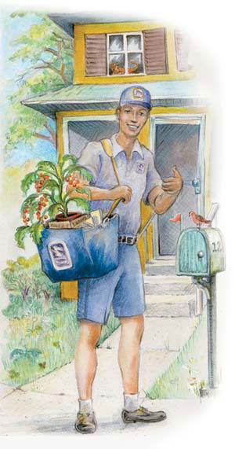
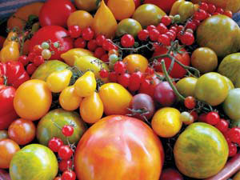
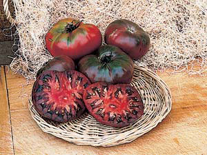
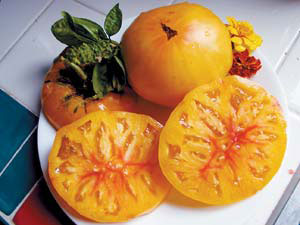
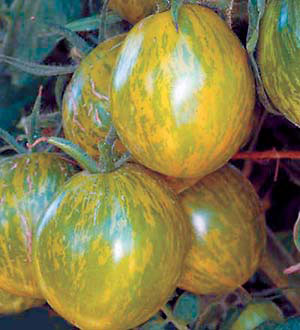

First Class Tomatoes
Get delicious, hard-to-find varieties delivered to your door.
By Barbara Pleasant
April/May 2006
You can explore the wonderful world of great-tasting heirloom tomatoes by purchasing tomato seedlings from a mail-order company. Several companies now offer varieties that pair superior flavor with unique shapes and colors that probably aren’t available at your local garden center. You can choose from hundreds of varieties - usually grown organically - and have them shipped directly to your garden gate.
Thanks in part to the utter tastelessness of most supermarket tomatoes, interest in great-tasting homegrown tomatoes is booming. But before you turn to the mail-order sources discussed here, be sure to check with your local Extension office and at your farmer’s market to see if any nearby growers are offering tomato transplants. If not, order from the nearest company listed in Tomato Plants by Mail, below.
All in Good Taste
“We want tomatoes that taste so good that when you bite into them, you hum,” says Cindy Martin, co-owner of The Tasteful Garden in Heflin, Ala., a pioneer in the mail-order tomato seedling business. Cindy and her husband, George, grow and ship 30,000 tomato seedlings each year, from February through July. Like many other mail-order companies, The Tasteful Garden always ships plants early in the week so they never spend a weekend in transit, thus minimizing trauma to the plants.
Waiting until late spring to buy and plant tomatoes also can lead to better crops, according to David Baldwin, owner of The Natural Gardening Co. in Petaluma, Calif. “I never advise customers to be early birds,” Baldwin says, “because seedlings grown in intense sunlight during April and May have a denser cell structure that makes them sturdy and strong. A perfect plant for shipping stands 8 to 10 inches tall, but the best readiness indicator is the thickness and strength of the stem.”
Receiving big, sturdy plants of richly flavored ‘Black Krim’ or fruity ‘Sungold’ cherry tomatoes is especially meaningful to gardeners who have lost their early plantings to unexpected catastrophes.
Organic from the Start
Unlike typical garden centers, most mail-order companies that specialize in tomato seedlings rely on organic methods to produce vigorous plants. For example, both Territorial Seed Co. in Cottage Grove, Ore., and The Tasteful Garden mix worm castings into custom soil mixtures for their tomato seedlings, then use organic fertilizers to support steady growth. You may be able to find organically grown tomato seedlings at your local farmer’s market, but most commercially raised seedlings get their start in fumigated soil and are then fed a steady diet of synthetic chemicals. The difference is important to any gardener who wants to start out with the best.
Martin says she gets orders from many young families who want to begin gardening. “I always suggest cherry tomatoes to people with kids,” she says. “They’re easy to grow, and children love them.” She also advises beginning gardeners to start with a mix of dependable hybrids, such as ‘Better Boy,’ and beautiful heirlooms such as ‘Green Zebra.’ Baldwin agrees - he offers a dozen disease-resistant hybrids such as the mouthwatering ‘Sugary,’ as well as heirlooms including ‘Marvel Striped’ beefsteak, which has won a top spot at The Natural Gardening Co.’s annual taste-testing event. “We try to do some of the homework for gardeners, so that the things we put out work for them,” Baldwin says.
Companies that specialize in heirloom tomato seeds generally choose their most dependable varieties to sell as transplants. For example, Seed Savers Exchange in Decorah, Iowa, sells seeds for 79 tomato varieties, but devotes precious greenhouse space to only a dozen. Not surprisingly, the same varieties frequently turn up on multiple mail-order seedling lists. ‘Amish Paste,’‘Cherokee Purple’ and ‘Stupice’ have earned places on several mail-order lists by performing well under a wide range of conditions and delivering the flavor people want from homegrown tomatoes.
Indeed, trying plants from unusual, open-pollinated (nonhybrid) varieties is an excellent way to decide if you like them enough to start saving seeds, which is the first step toward cultivating varieties that are especially well-suited to your garden. Instead of buying half a dozen seed packets to try six varieties, for example, you might simply order one of the seedling collections offered by Seeds of Change in Henderson, Nev. The company’s “Farm Favorite” collection includes ‘Garden Peach,’ Greek ‘Thessaloniki’ and four other tomato varieties.
Other companies offer similar assortments. But don’t expect Laurel Garza, owner of Laurel’s Heirloom Tomato Plants in Southern California, to suggest a short list. Her current favorite is a smoky-hued slicer named ‘Paul Robeson,’ but each season brings new contenders such as the pea-sized ‘Hawaiian Currant,’ which Garza calls “a magnificent, miniature morsel.” With more than 180 varieties available (until the rare ones sell out), Laurel’s is the place to look for hard-to-find goodies such as the gourmet ‘Goose Creek’ and the disease-resistant ‘Clint Eastwood’s Rowdy Red.’
Doing the Math
How much will an adventure in mail-order tomatoes cost? Plant prices vary, as do shipping costs, but expect to pay between $25 and $35 for a half-dozen plants, including shipping. Seedlings from Laurel’s Heirloom Tomato Plants and The Tasteful Garden run high ($4 and up per plant, plus shipping), but are grown in big 4-inch containers. Plants grown in smaller pots typically cost less; $2 per plant is a common price for seedlings in 2½-inch pots, and those grown in 3½-inch pots sell for about $3 each.
If $2 to $4 per plant seems high to you, remember that over the season each plant will produce many pounds of high-quality, super delicious, vine-ripened tomatoes for fresh eating, canning, freezing or drying. It’s smart to work with a grower who knows which tomato varieties consistently do well in your region, especially if you’re new to the art of tomato growing. And remember it’s always wise to keep plants’ transit times as short as possible. Some suppliers continue to grow and ship plants through June and July, when seedlings are long gone from retail store shelves, but be sure to place orders for late plantings in advance so they can be seeded and shipped at just the right time.
Environmentally speaking, the downside to having tomato seedlings shipped to you is the packaging. To protect the plants in transit, tomatoes are carefully packed in cardboard armor. Some sellers also wrap the pots in plastic to keep the soil from jiggling loose. Plan to set the plants free as soon as you receive them, and look for ways to reuse the cardboard and pots before sending them to your recycling bin.
Tomato Plants by Mail
Each of the following companies sells at least 10 varieties of tomato seedlings by mail, and some sell more than 100. Packaging practices affect minimum order size, which varies by company. This list includes suppliers in most regions of North America, and many offer organic seedlings. To minimize shipping costs and trauma to your plants, first check with companies located close to where you live. Also keep in mind that Canada, as well as California and a few other western states, place costly restrictions on the incoming shipment of live plants, which is yet another reason to work with regional suppliers.
1. W. Atlee Burpee & Co.
300 Park Avenue
Warminster, PA 18974
(800) 888-1447
21 varieties, shipped in 3-packs
2. Cedar Knoll Farm Greenhouse
57447 865th Road
Laurel, NE 68745
(402) 584-2699
26 varieties, 3 plant min.
3. The Chile Woman
1704 S. Weimer Road
Bloomington, IN 47403
(812) 339-8321
36 varieties, 6 plant min.
4. The Cook’s Garden
P.O. Box C5030
Warminster, PA 18974
(800) 457-9703
11 varieties, shipped in 3-packs
5. Cross Country Nurseries
P.O. Box 170
199 Kingwood-Locktown Road
Rosemont, NJ 08556
(908) 996-4646
120 varieties, 12 plant min.
6. Harris Seeds
P.O. Box 24966
355 Paul Road
Rochester, NY 14624
(800) 514-4441
18 varieties, 5 plant min.
7. The Herb Cottage
442 County Road 233
Hallettsville, TX 77964
(979) 562-2153
45 varieties, shipped in 4-packs
8. Hirt’s Gardens
4943 Ridge Road
Medina, OH 44281
(866) 748-9984
40 varieties, shipped in 2-packs
9.Hole’s Greenhouses & Gardens
101 Bellerose Drive
St. Albert, Alberta T8N 8N8
(780) 419-6800
18 varieties, shipped in 4-packs; within Canada only
10.Laurel’s Heirloom Tomato Plants
1725 257th Street
Lomita, CA 90717
(310) 534-8611
180 varieties, no min.
11.Marianna’s Heirloom Seeds
1955 CCC Road
Dickson, TN 37055
(615) 446-9191
18 varieties, shipped in 3-packs
12.The Natural Gardening Co.
P.O. Box 750776
Petaluma, CA 94975
(707) 766-9303
26 varieties, shipped in 6-packs
13.Seeds of Change
One Sunset Way
Henderson, NV 89014
(888) 762-7333
15 varieties, shipped in 6-packs
14.Seed Savers Exchange
3094 North Winn Road
Decorah, IA 52101
(563) 382-5990
12 varieties, shipped in 6-packs
15.Territorial Seed Co.
P.O. Box 158
Cottage Grove, OR 97424
(800) 626-0866
72 varieties, shipped in 6-packs
16.The Tasteful Garden
973 County Road 8
Heflin, AL 36264
(866) 855-6344
44 varieties, no min.
17.Totally Tomatoes
334 West Stroud Street
Randolf, WI 53956
(800) 345-5977
21 varieties, shipped in 8-packs
Contributing editor Barbara Pleasant aspires to eat garden-grown tomatoes daily from June through October.
|
 Dave Channon You can get delicious, hard-to-find tomato varieties delivered to your door. |
 Tabitha Alterman You can now order a wide variety of tomato seedlings by mail to grow delicious heirloom varieties in your garden. Most companies that specialize in mail-order tomato seedlings also practice organic growing techniques. |
 Harris Seeds ‘Cherokee Purple’ tomatoes |
|
 Marianna’s Heirloom Seeds ‘Marvel Striped’ tomatoes |
 The Herb Cottage ‘Green Zebra’ tomatoes on the vine |
 Tomato Plants by Mail |